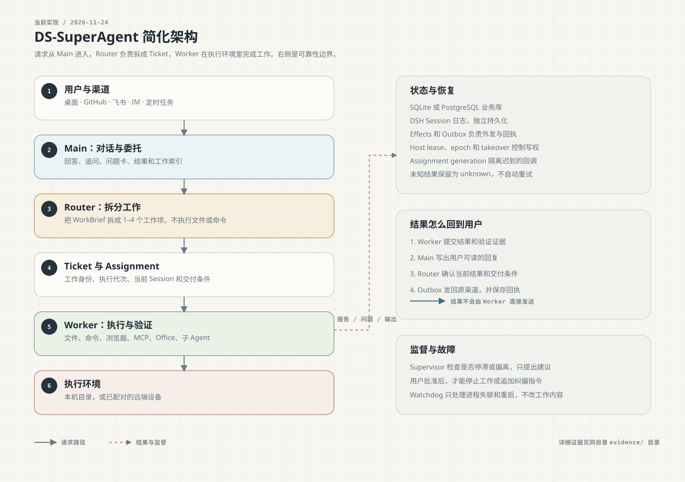

报告里的旧原型是 Router 直接面对用户，再加 Worker 执行。当前拆出了独立 Main，用户只和 Main 对话。
01 / 结论
先看四件事
后面的表和图都在展开这四点，细节可以暂时跳过。
如果只看代码，核心工作流程已经贯通；如果看真实产品，仍处在“本机可用，外部环境验证不足”的阶段。
Main 和 Router 没有文件、Shell 工具，Worker 才拿到执行工具。旧报告里“Router 靠提示词不执行”的判断已过时。
Ticket 和 Session 解耦，执行有代次，外部结果未知会保留，Host 重启需要重新取得写权。
Main 忙碌时不能继续发消息，没有 100 词 IM 硬限制，渠道能力不齐，单 Host 也没有水平扩展。
02 / 架构
现在的请求路径
用户只和 Main 说话。Main 把任务交给 Router，Router 拆成 Ticket，Worker 在指定环境中执行。 Worker 完成后先提交结果和证据，Main 再写给用户，最后由 Outbox 发回原渠道。


请求怎么流动
diagrams/simplified-workflow.mmd
flowchart LR
U["用户 / 渠道"] --> M["Main
对话与委托"]
M -->|"WorkBrief"| R["Router
拆解任务"]
R -->|"Ticket"| W["Worker
执行与验证"]
W -->|"结果 + 证据"| D["Delivery / Outbox"]
D -->|"Main 生成回复后发送"| U
Mermaid 源文件在同目录 diagrams/simplified-workflow.mmd。
03 / 核心机制
关键机制只列 13 项
完整 35 项评分在 evidence/01-domain-runtime.md。这里只保留判断完成度时最需要的部分。
| 机制 | 当前做法 | 状态 |
|---|---|---|
| 三层角色 | Main 是唯一用户入口，Router 拆解任务，Worker 执行。三者有独立模型和 Session。 | 完成 |
| 工具边界 | 每个 Session 先清空默认工具，再按角色注册。Main 和 Router 没有文件、Shell 权限。 | 完成 |
| 工单与执行代次 | Ticket 是业务单位，Assignment 是一次执行尝试。迟到回调带代次，不能唤醒新执行。 | 完成 |
| Thread 与订阅 | 新事件先进入来源处理；已有 Worker 订阅的 Thread 直接生成 WorkInput，不再经过 Router。 | 完成 |
| 两级过滤 | 确定性的 Gate 先过滤来源、身份和 @ 关系；没有明确规则的候选再交给 Router 语义判断。 | 完成 |
| 结果交付 | Worker 只提交 report，Main 生成用户可见文字，Router 核对后写 Delivery，Outbox 负责发送和回执。 | 完成 |
| 后台执行 | Worker 支持后台命令、PTY 和子 Agent。完成事件回到原 Assignment，不阻塞主回合。 | 完成 |
| 上下文读取 | ContextCard 提供 4–16 KiB 分页和下一跳引用。局部性组装仍需模型主动调用。 | 部分 |
| 主动与监督 | Proactive rules 支持 observe / auto；Supervisor 只提出暂停或纠偏建议，需要用户批准。 | 部分 |
| 远端执行 / BYOM | 已配对设备可执行文件、搜索、命令和资产操作，身份用密钥固定。设备入口仍是开发脚本。 | 代码完成 |
| 算存分离 | 业务库和 Session 都能切 PostgreSQL，但每个 Instance 仍只有一个 Host 和一个 Router。 | 部分 |
| 长期记忆 | Main 可查询和提议记忆，Worker 需授权。缺少跨月摘要、归档和回收策略。 | 部分 |
| 真实模型实验 | 有 Qwen3.5 9B 小样本和 mock 等负载测试，没有文章级真实模型、token 和延迟消融。 | 缺 |
04 / 对照报告
哪些结论仍然成立，哪些已经过时
Claude 的报告准确描述了文章和旧原型，但旧原型不等于当前仓库。
| 项目 | Claude 报告里的旧原型 | 当前 DS-SuperAgent |
|---|---|---|
| 角色结构 | Router / Worker 两层，Router 面对用户。 | Main / Router / Worker 三层，Main 面对用户。 |
| Router 工具 | 仍有 Bash 和 read，只能靠提示词约束。 | 没有文件和 Shell 工具，DSH 工具白名单强制限制。 |
| 订阅单位 | Ticket 订阅 Thread，不绑定 Session。 | 继续保留，并增加了 WorkItem、Assignment 代次和所有权。 |
| Worker 对外 | Executor 可以直接确认、开 PR、回评论。 | Worker 只提交结果和问题；最终回复由 Main 和 Outbox 发出。 |
| 异步执行 | 前台命令超时转后台，完成时唤醒。 | 使用显式后台命令、PTY 和子 Agent；Main UI 仍不能在忙碌时插入新消息。 |
| 存储 | 单机 SQLite。 | SQLite 或 PostgreSQL；Session 也有独立持久化实现。 |
| 执行环境 | 与主 Session 同机运行。 | 本地目录或已配对远端设备，选择后不会静默回退。 |
| Watchdog | 另一个 profile 每小时检查退出码。 | 外部 Watchdog 负责进程恢复，Host 内 Supervisor 负责语义巡检和提案。 |
| 多信道 | 飞书和 GitHub。 | UI、飞书、GitHub、8 类配对 IM、定时任务；邮箱仍是手动收件箱，不是 Source。 |
报告仍然准确
- Router 和 Worker 的职责拆分仍然成立。
- Thread 订阅、上下文预算和链式读取仍是核心。
- 当前桌面默认仍是单机 Host，因此“没有云端无状态计算”仍部分成立。
报告已经过时
- 当前是 Main / Router / Worker 三层架构。
- 当前 Worker 只提交结果和问题，最终回复由 Main 和 Outbox 发出。
- 当前支持 PostgreSQL、远端设备和 Supervisor，不再是单机 SQLite 原型。
05 / 完成度
两个百分比，分别代表什么
79% 衡量文章机制在代码中是否有对应实现；35% 是真实生产证据的粗略估计，不是测试通过率。
代码层：Main、Router、Worker，WorkBrief、Ticket、Assignment，Delivery、Outbox、Host lease 都已经落到代码和测试入口。
产品层：桌面默认路径可用，支持本地工作、问题卡、停止、恢复、设置和只读执行记录。远端设备、托管数据库和独立 Watchdog 需要额外部署。
生产层：已有本地 Qwen3.5 9B、真实 GitHub 回执、Windows 安装升级和 Ubuntu 远端设备证据。真实飞书、8 类 IM、托管 PostgreSQL、离线 stop/resume 和同 SHA 全量 CI 仍未闭合。
| 层级 | 结果 | 说明 |
|---|---|---|
| 核心领域逻辑 | 基本完成 | 有代码、有测试入口；本次没有重跑全量。 |
| 桌面默认路径 | 可用 | 仅限本机 Host；外部渠道和远端需要配置。 |
| 生产组合验收 | 部分 | 真实环境证据分散，尚未形成同版本连续链路。 |
P0
Main 还是半双工
Main 正在回复时输入框禁止提交，只能停止回复；工作可以并行，但对话不能随时插入。
P0
真实渠道覆盖不足
飞书、8 类 IM、邮件和部分 GitHub 路径仍缺真实账号、配额、限流和重连验收。
P0
没有无状态计算平面
状态可以外置到 PostgreSQL，但每个 Instance 仍是单 Host、单 Router，没有水平扩展方案。
P1
100 词限制没有落地
当前只有字符上限和“简短”提示，没有按词数执行的硬约束。
P1
渠道问答能力不一致
飞书有 Q-code 结构化回答，GitHub 和多数 IM 没有等价解析。
P1
长期记忆没有归档策略
历史读取有上限，但没有跨月摘要、冷存、回收和统一成本控制。
P1
BYOM 还不是产品级 daemon
设备端入口是开发脚本，没有安装、开机自启、自动升级和生产网络加固。
P1
发布证据需要同一 SHA 收口
历史 CI 有成功也有失败，当前工作树还有未提交改动。
06 / 证据
材料位置与范围
页面只做摘要。领域、UI、桌面三份审计保留了路径、行号和边界条件。
| 项目 | 数据 | 备注 |
|---|---|---|
| 领域核心 | 138 个文件，42,553 行 | superagent/src/ |
| DSH 产品面 | 201 个文件，54,502 行 | superagent/dsh/src/ |
| 桌面主进程 | 6,805 行 | app/src/ |
| 测试 | 242 个测试文件 | 149 domain + 48 DSH + 45 desktop；未重跑 |
| 设置页 | 10 组，27 个分区 | 由 settings-navigation.js 导出 |
| 外部 IM | 8 个平台 | 真实账号未验收 |
领域与运行时审计436 行，含代码路径和 35 项评分↗
DSH / UI 产品面审计544 行，含 UI、协议和渠道差异↗
桌面与部署审计189 行，含启动、隔离、远端和 Watchdog↗
简化架构 SVG页面主图源文件↗
工作流程 Mermaid页面时序图源文件↗
机器可读数据指标、评分和主要风险↗
边界：本报告是静态代码审计和现有实施记录核对，不是全量测试结果。真实模型、真实渠道、第二设备、托管数据库和发布验收仍需在同一候选版本上单独执行。